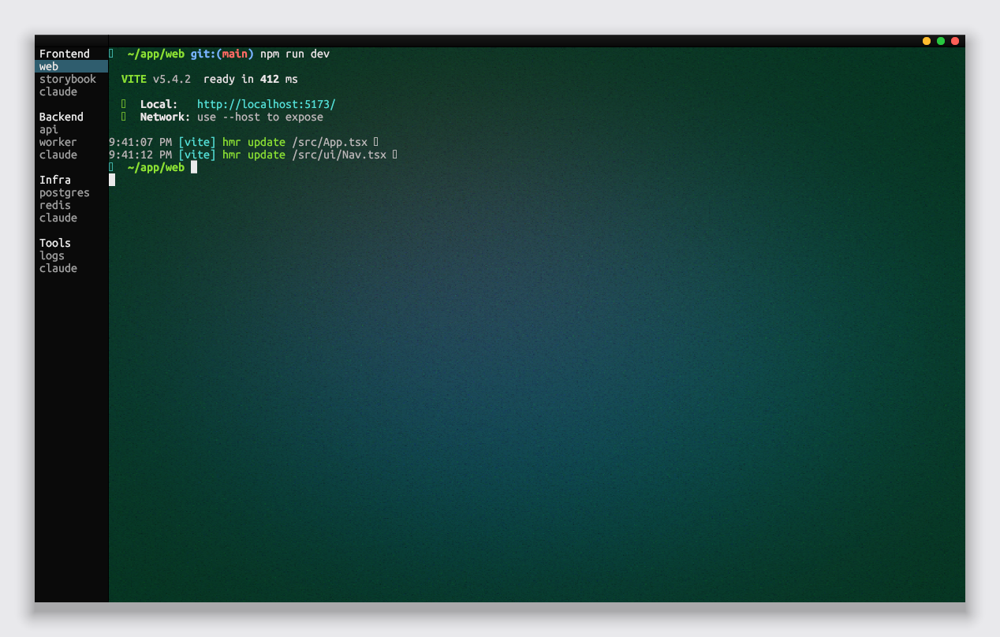

MyTunes And termset

Linux AMD64
curl -fL -o MyTunes.AppImage https://github.com/liamzebedee/distribution/releases/latest/download/MyTunes-linux-amd64.AppImage && chmod +x MyTunes.AppImage && ./MyTunes.AppImage
Mac ARM64
curl -fL -o MyTunes.tar.gz https://github.com/liamzebedee/distribution/releases/latest/download/MyTunes-macos-arm64.tar.gz && tar -xzf MyTunes.tar.gz && open MyTunes.app
Linux AMD64
curl -fL -o terms https://github.com/liamzebedee/distribution/releases/latest/download/terms-linux-amd64 && chmod +x terms && ./terms
Mac ARM64
curl -fL -o terms https://github.com/liamzebedee/distribution/releases/latest/download/terms-macos-arm64 && chmod +x terms && ./terms